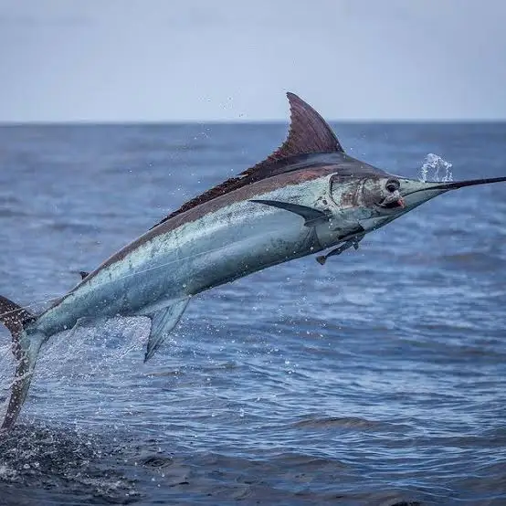
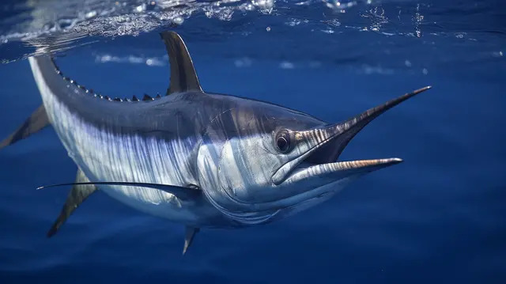
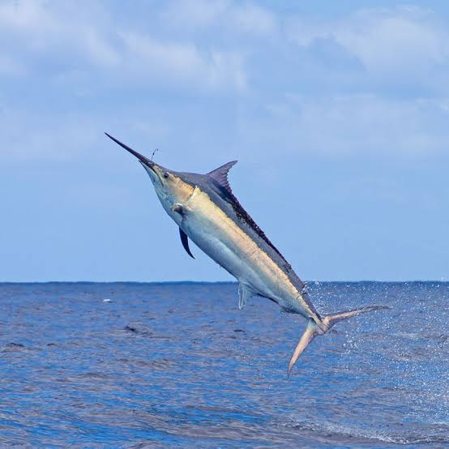
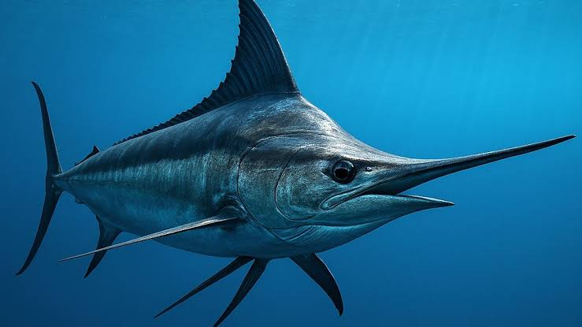
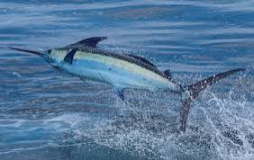
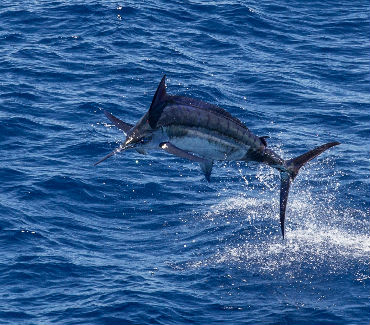

Vive nelle acque tropicali e temperate degli oceani Atlantico e Indiano. È una specie pelagica che ama le correnti calde e gli spazi aperti.


È un predatore d'élite. La sua dieta include:

Predilige le acque superficiali (epipelagiche) per cacciare, ma può immergersi fino a 800 - 1000 metri di profondità durante le migrazioni.
Può raggiungere velocità incredibili, fino a 110 km/h, rendendolo uno dei pesci più veloci del pianeta.
Non usa il rostro per infilzare, ma per "stordire" i banchi di pesci con colpi rapidi e precisi prima di mangiarli.
Le femmine sono molto più grandi dei maschi e possono superare i 4 metri di lunghezza e pesare oltre 600 kg.

